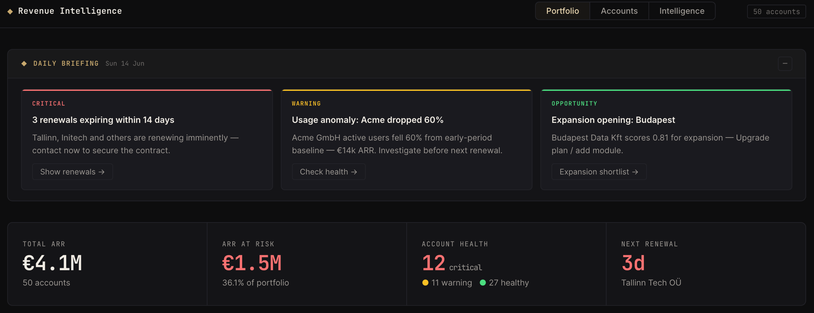
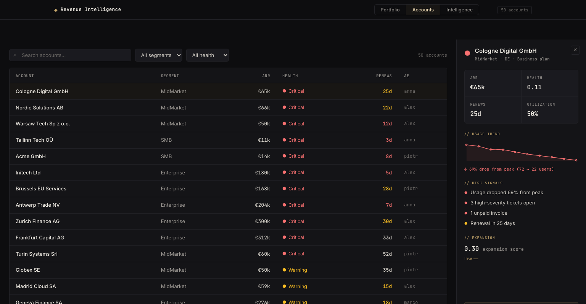
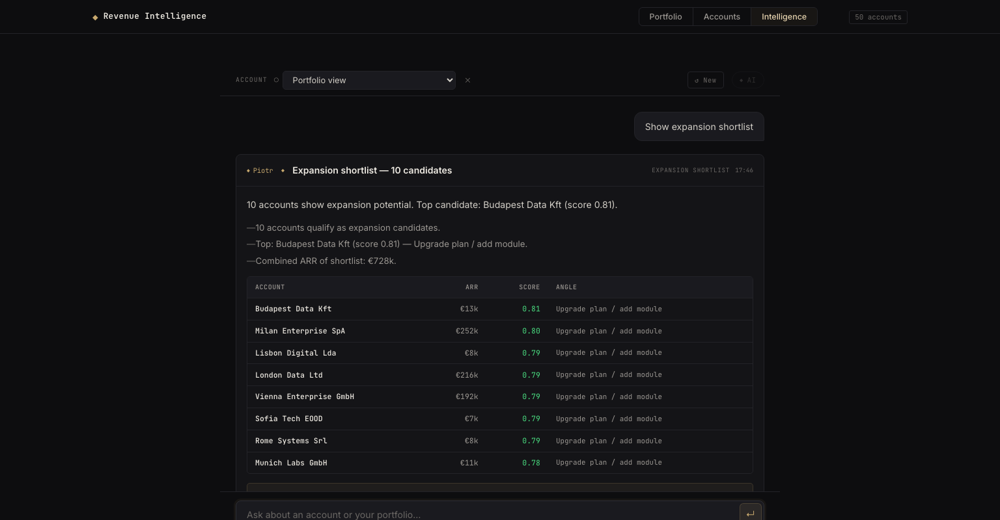

A CSM opens their laptop on Monday morning to 40 accounts, a renewal due in five days they didn't see coming, and a Slack message from an AE asking "is Acme still healthy?" They don't know. Nobody does, until someone digs through a CRM, a usage dashboard, and a support tool that don't talk to each other.
That's the job most Customer Success dashboards actually do — they show you a wall of numbers and leave the prioritization to you. I built Revenue Intelligence Agent to fix that: it reads the whole portfolio every morning and tells you what to do about it, in order, before you ask.
This post is a demo, a tour of how it works, and an honest account of where it broke during development.
What it actually does
Revenue Intelligence Agent is a CS co-pilot for B2B SaaS portfolios. It sits on top of your customer, subscription, usage, billing, and support data, and does three things most tools split across three different products:
- Flags churn risk and usage anomalies before a human would notice them
- Answers portfolio questions in plain English, with the SQL it ran shown alongside the answer
- Drafts the follow-up — an email, a Slack alert, a CRM note — in one click, scoped to the account you're looking at
It runs as a single local app: FastAPI backend, DuckDB as the warehouse, dbt for the transformation layer, and Claude for the parts that need judgment rather than arithmetic.

That top section — three cards labeled Critical, Warning, Opportunity — is the Daily Briefing. It's the first thing you see, and it's the whole point: instead of a dashboard you have to interrogate, you get a memo. "3 renewals expiring within 14 days." "Acme GmbH active users fell 60% from baseline." "Budapest Data Kft scores 0.81 for expansion." Each card has a button that fires the relevant query directly — no typing required to go deeper.
How it's built
The architecture is intentionally boring where it can be and careful where it has to be:
Browser SPA (Portfolio / Accounts / Intelligence)
│
▼
FastAPI → core/intent.py (rapidfuzz NL intent detection)
→ core/llm.py (Claude: insights, assets, chat)
→ core/guardrails.py (SQL allowlist + PII checks)
→ core/interpreters.py (deterministic fallback renderers)
│
▼
DuckDB (embedded)
dbt/models/gold/ — health scoring, ARR, renewals
dbt/models/ai/ — AI-safe views, allowlisted only
│
claude-sonnet-4-6 (optional — falls back to deterministic mode)
Two decisions matter more than the rest.
Natural language routing doesn't depend on an LLM. Typing "Is Initech Ltd healthy?" doesn't go straight to Claude — it goes through rapidfuzz fuzzy matching against a fixed set of intents (health check, renewal risk, expansion, anomaly, account lookup, portfolio summary). The intent decides which of six pre-written SQL templates runs. Claude only gets called after the SQL has already returned a result, to turn that result into a narrative, bullet points, and a suggested next action. No ANTHROPIC_API_KEY? The app runs exactly the same queries and renders the same data through deterministic templates instead. You lose the prose, not the answer.
The AI never gets to write or choose its own SQL against arbitrary tables. Every model the chat can query lives in dbt/models/ai/ — a layer that re-exposes the gold models under allowlisted names, gated by a dim_ai_allowed_assets model. The guardrails are checked in code, not just convention:
BLOCKED_KEYWORDS = ["insert", "update", "delete", "merge", "create",
"drop", "alter", "truncate", "grant", "revoke", "call"]
PII_PATTERNS = ["email", "phone", "address", "iban", "card", "password", ...]
def compute_guardrails(sql, allowed_assets, df_shape):
select_only = sql.lower().startswith(("select", "with")) and not blocked
allowlisted = all(table in allowed_assets for table in extract_tables(sql))
no_pii = not any(pattern in col for col in select_columns for pattern in PII_PATTERNS)
...
Every chat response has an expandable Evidence panel showing the exact SQL plus four badges: SELECT-only, Allowlisted, No PII, Row limit. That panel exists because "trust me" is not a feature CS leaders will buy. Show the query, show the guard, let them verify it themselves.
The data layer follows a plain medallion shape:
seeds/ customers, subscriptions, invoices, product_usage_daily, support_tickets
gold/ fct_account_health_score, fct_account_expansion_potential,
fct_renewals_at_risk, dm_account_overview
ai/ ai_* views — only what's in dim_ai_allowed_assets is queryable
fct_account_health_score is the one model the rest of the product hangs off, so it's worth showing the real logic rather than a sanitized version:
, 1.0
- (
0.35 * least(1.0, usage_drop_ratio)
+ 0.25 * least(1.0, tickets_high * 1.0 / 3)
+ 0.25 * case when unpaid_invoices > 0 then 1.0 else 0.0 end
+ 0.15 * case
when days_to_renewal is null then 0.0
when days_to_renewal < 30 then 1.0
when days_to_renewal < 90 then 0.5
else 0.0
end
) as health_score
Four signals, fixed weights, no black box: usage drop matters most (0.35), then support load and unpaid invoices tied (0.25 each), then renewal urgency as a smaller multiplier (0.15) since it's a timing signal, not a health signal on its own. You can read this query in thirty seconds and know exactly why an account is red. That's the bar — if a CSM can't explain a score to a VP, the score is a liability, not a feature.
Walking through it
Click into Accounts and pick a critical row — Cologne Digital GmbH, €65k ARR, health score 0.11, renews in 25 days:

The drilldown panel doesn't make you go hunting. Usage trend chart, colored by drop severity. Risk signals listed in plain language: usage dropped 69% from peak, three high-severity tickets open, one unpaid invoice, renewal in 25 days. Expansion score at the bottom even on an account that's clearly at risk — because expansion and churn risk aren't mutually exclusive, and burying one to show the other is how teams miss upsell conversations they should be having anyway. "Ask Intelligence →" carries that exact account into the chat view with context already loaded.
That chat view is the Intelligence tab — natural language over the whole portfolio:

Asking "show expansion shortlist" returns ten ranked candidates with ARR, score, and a suggested angle — "upgrade plan / add module" — sorted by expansion potential. That score is gated by health on purpose: an account with usage growth but a critical health score doesn't make the shortlist, because pitching expansion to an account that's about to churn is how you lose the renewal and burn the relationship. After any response, three buttons appear — email draft, Slack alert, CRM note — and one click turns the answer into something you can actually paste into a tool you already use, instead of a paragraph you have to rewrite by hand for the third time today.
Where it broke
The honest version of "what was hard," in build order:
The first UI was Streamlit. It had to go. Streamlit is fast to prototype with and bad at being a real product — no real routing, awkward state management once you have three views that need to share context (an account clicked in Accounts has to land pre-loaded in Intelligence). I rewrote the whole frontend as a vanilla JS SPA over a FastAPI backend. More code, but it's my code, not a framework's opinion about how state should work.
The dashboard sometimes loaded empty — for no reason I could reproduce on purpose. The charts were trying to draw themselves before the data had actually arrived. It's the same failure mode as a downstream dbt model running before its upstream source has finished loading: everything looks fine in isolation, and it only breaks on the timing you didn't test. My first fix was to make the page wait a little longer before drawing — which helped, but "wait a little longer" is never a real fix, just a smaller window for the same race. The actual fix was flipping who's in charge: instead of the page guessing when the data is ready and going to fetch it, the part of the code that has the data announces "I'm done" the moment it finishes, and everything else reacts to that. Same principle as triggering a pipeline off a completion event instead of polling a table until the row count looks right.
The bigger trap wasn't a bug at all — it was a label. Early on, the health donut had three bands: Healthy, At Risk, Critical. There was also a KPI card titled "At-Risk Accounts" that only counted the Critical ones. So "at risk" meant two different things depending on which corner of the screen you were looking at, and a CSM scanning the page in five seconds couldn't tell if 12 accounts were in trouble or 23. I renamed the bands to Healthy / Warning / Critical and changed the KPI card to show the full breakdown — "12 critical · 11 warning · 27 healthy" — instead of one ambiguous number. It's the same mistake as two teams calling something "active customer" with two different definitions: the data underneath was correct, the labels were lying. A confusing column name does more damage to trust than a wrong row ever will.
Getting the guardrails right took more passes than the chat feature itself. It's easy to build an agent that answers questions well. It's harder to build one a RevOps lead will actually deploy, because the real question isn't "does it answer correctly," it's "can I prove to my CISO it can't insert, can't see PII, and can't wander off the allowlist." The keyword block list, the allowlist check against dim_ai_allowed_assets, and the PII column-name scan all came after the chat already worked — because a working demo and a defensible one aren't the same project.
Why this matters for CS teams
Most CS tooling answers "what happened." This answers "what do I do, today, in what order" — and that's the actual job description of a CSM managing a 40-to-200-account book. A renewal slipping from 90 days out to 14 isn't useful information on day 76; it's useful on day 1, paired with the usage drop that predicted it. The Daily Briefing exists because the value of a churn signal decays daily, and most teams find out about risk in a QBR prep meeting instead of the morning it started.
It also changes who can act on the data. A CSM doesn't need to know SQL, doesn't need to ping an analyst, doesn't need to wait for a dashboard refresh. They ask a question, get an answer with the evidence attached, and have a drafted email in the time it used to take to open a CRM tab.
Takeaways
- Proactive beats reactive only if the system runs without being asked — the Daily Briefing is the actual product; the chat is the drill-down.
- Don't let the LLM write its own SQL. Fixed templates plus an allowlisted semantic layer mean Claude narrates results it didn't choose to fetch.
- A working AI feature and a deployable one are different milestones. Guardrails — keyword blocks, table allowlists, PII column scans — took longer to get right than the chat itself.
- Build the deterministic path first. The app runs fully without an API key; AI narrative is a layer on top, not a dependency the product collapses without.
- A health score only earns trust if someone can read it in thirty seconds — four weighted signals beat a model nobody can explain in a renewal call.
- Load-order bugs in an SPA aren't solved by deferring further — they're solved by making the data owner announce readiness instead of waiting to be polled.
What would your CS team actually do differently if they saw this list every morning instead of once a quarter?